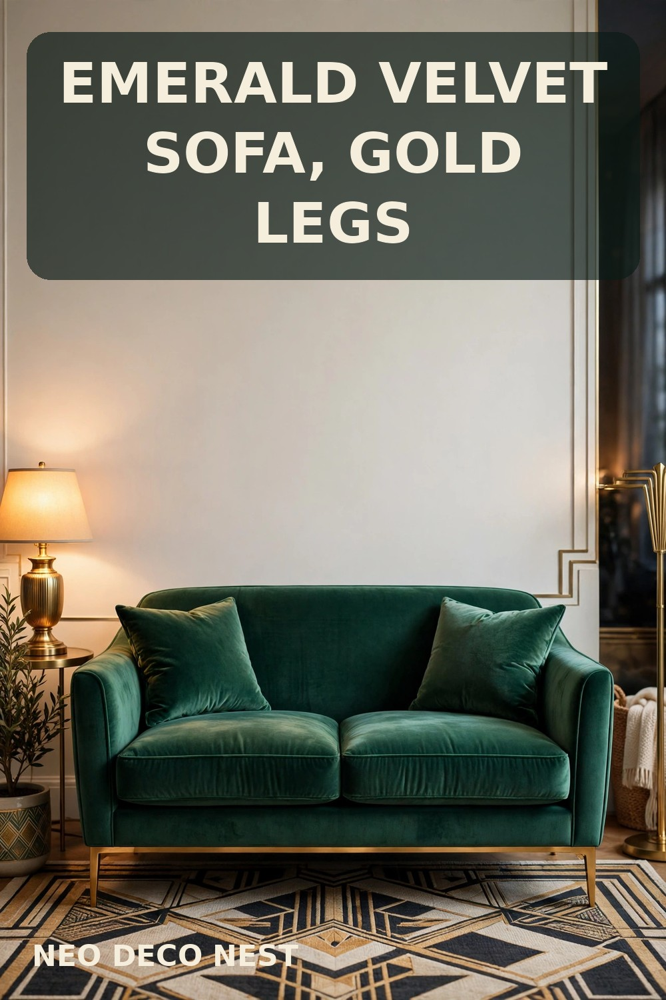
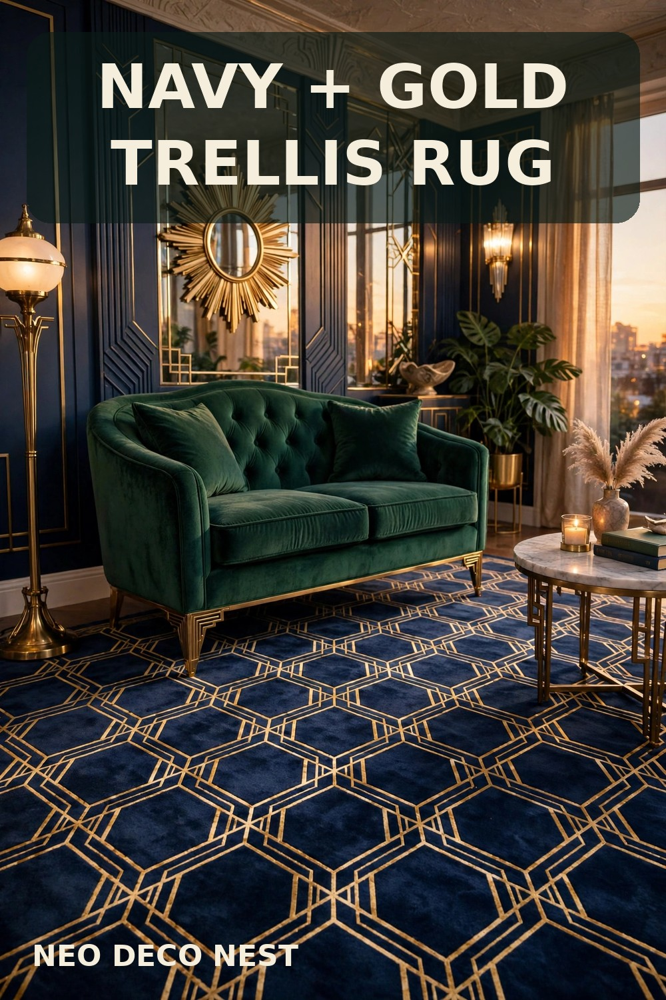
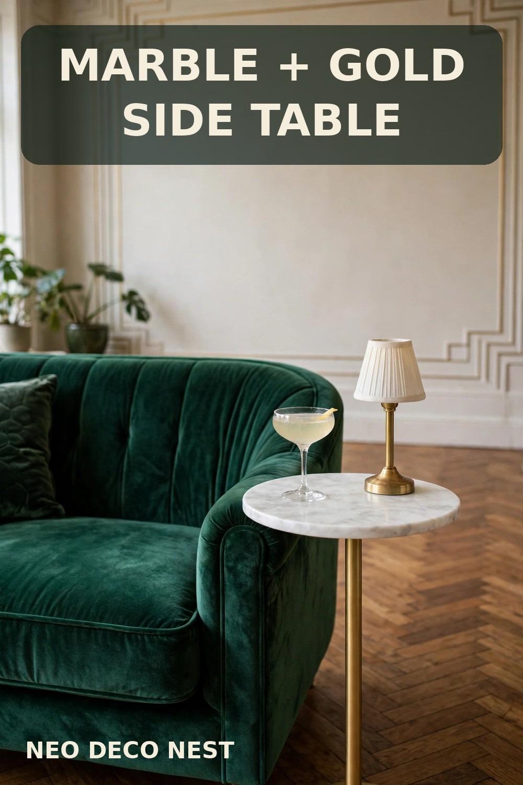
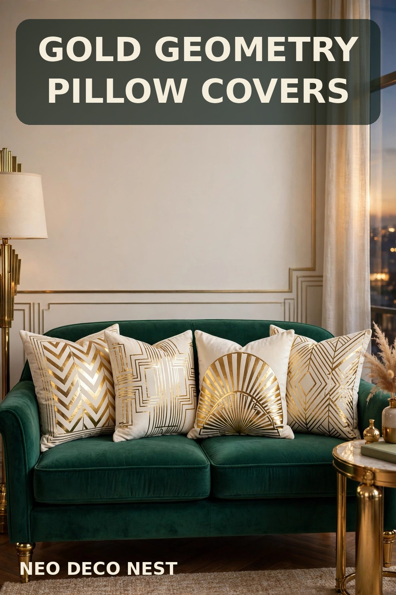
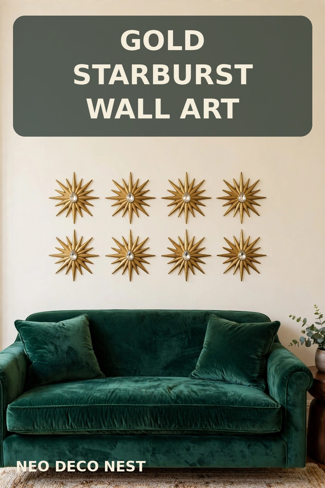

Neo Deco Living Room Ideas: Emerald Velvet, Brass and Gold Geometry
This post contains affiliate links. As an Amazon Associate I earn from qualifying purchases. If you buy through these links, we may earn a commission at no extra cost to you.
Images on this page are styled inspiration renders created for Neo Deco Nest — the Amazon listing shows the exact product, colors and dimensions.
A Neo Deco living room starts with one anchor and builds out in brass and geometry: a deep emerald velvet loveseat, a patterned rug under it, a real marble side table within reach, and gold accents on the sofa and the wall. These are the five pieces behind our Neo Deco Living Room board — no renovation, no contractor, just five shoppable pieces.

Wrofly Emerald Green Velvet Loveseat, 59 in, Golden Metal Legs
A 59-inch emerald velvet loveseat with deep, overstuffed seats and slim golden metal legs. This is the anchor of the whole room: the emerald velvet does the 1920s-lounge work, while the gold legs keep it light enough for a small living room. At 59 inches it fits where a full three-seat sofa will not, and the two matching throw pillows come with it.

Unique Loom Glam Trellis Area Rug, 6 x 9 ft, Navy and Gold
A 6 by 9 foot trellis rug in navy and gold from Unique Loom's Glam collection. An honest note on the colour: the rug itself is navy and gold, not emerald — it grounds the emerald loveseat the way a ballroom floor grounds the furniture on it, and the gold trellis picks up the brass around the room. A 6x9 is the right size to sit under the front legs of a loveseat and a side table.

Kate and Laurel Tira Marble Side Table, White Marble Top, Gold Pedestal, 24 in
A real white marble top, 14 inches across, on a sculptural gold pedestal base, 24 inches high. This is the Deco way to hold a cocktail, a lamp or a stack of art books beside the sofa: genuine stone on top, gold underneath, handcrafted detail, zero renovation. One small caution from reviews: a few buyers note the pedestal base can feel slightly unsteady, so place it on a level floor and keep heavy items centred.

ZLINA Velvet Throw Pillow Covers, Set of 4, Cream with Gold Foil Geometry, 18 x 18 in
Four cream velvet pillow covers stamped with gold foil geometry — chevrons, lines and Deco fans — that turn a plain sofa into a Neo Deco statement in minutes. Covers only, 18 by 18 inches, with hidden zippers; you supply the inserts. This is the budget slot of the roundup and the fastest refresh in it: swap the covers, keep the sofa.

Blulu Gold Starburst Wall Decor, Cast Iron with Rhinestone Drops, Set of 8
Eight cast-iron gold starbursts with teardrop crystal accents, in sizes around 8, 10 and 12 inches. Arranged as a gallery wall above the sofa they scatter light like a 1920s ballroom ceiling — instant Neo Deco drama with eight hanging points and no drilling into anything structural. Because it is a set of eight, you can spread them wide above a loveseat or cluster them tight over a side table.
Every piece here was first featured on our Pinterest board. Follow Neo Deco Nest on Pinterest for a new Neo Deco find every day.